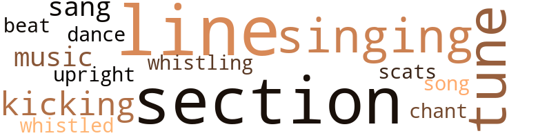
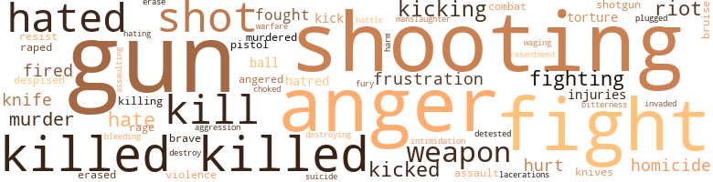
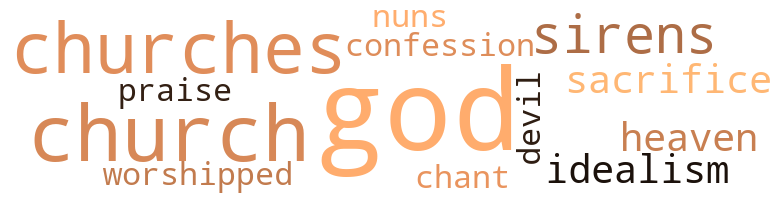

Hog Butcher, by Fair, Ronald L. (1966)
35 music-related terms matched in this text.
Most frequent terms in this topic: section (6); tune (4); line (4); lines (3); kicking (3)
chant.n.01
Definition: a repetitive song in which as many syllables as necessary are assigned to a single tone
| word | sentence |
|---|---|
| chant | Suddenly people began responding to his call and appeared on the street and picked up Wilford 's chant and said it to each other and shouted it to the policemen . |
dance.n.01
Definition: an artistic form of nonverbal communication
| word | sentence |
|---|---|
| dance | He had wanted to stop at the bars and watch the girls dance . |
kick.v.04
Definition: kick a leg up
| word | sentence |
|---|---|
| kicking | O'Kelly followed him , kicking the door open . |
| kicking | First they chased the loose football , kicking it when they came upon it , like soccer ; then , with no warning to someone watching the game , it was a delicate parcel that must be carried in one 's arms protected from those who struggled to rip it from the firm grasp of the runner and begin kicking it again ; then it was a volleyball and then a basketball to be tossed high in the air through an imaginary hoop ; and then , alas , it became the kicking game again . |
| kicking | They began kicking cans again , selecting new ones when the ones they were kicking went out of bounds into someone 's yard or on the roof of a garage . |
music.n.01
Definition: an artistic form of auditory communication incorporating instrumental or vocal tones in a structured and continuous manner
| word | sentence |
|---|---|
| music | The music screamed out of the juke box , the bass so heavy that it shook the windows , and it filled him with a yearning for a new experience , some new thing that would make him feel well again , some new thing that he had not had or at least had not understood before . |
| music | They stopped to listen to the music coming from a juke box in a tavern that had just opened . |
rhythm.n.01
Definition: the basic rhythmic unit in a piece of music
| word | sentence |
|---|---|
| beat | It 's just too much to think that . . . " They moved a week later and Larry found when he returned to his beat that his determination to have a home had had far-reaching effects . |
scat.n.01
Definition: singing jazz; the singer substitutes nonsense syllables for the words of the song and tries to sound like a musical instrument
| word | sentence |
|---|---|
| scats | The jurors leaned forward in their scats to see what the officer was doing . |
section.n.01
Definition: a self-contained part of a larger composition (written or musical)
| word | sentence |
|---|---|
| section | " Incidentally , if you 're going out to that new section we talked about the other day , I can promise you a good deal - one like you 've never seen before . |
| section | And rather than live with the black man , rather than live with their fellow Americans , they ran , and , without knowing it , without caring , they turned over another used section of the city to the black masses and at the same time increased their own burden with a heavier mortgage . |
| section | He was drawn , and would have been drawn even against his will , to this , the poorest and temporarily the most highly concentrated section of the sprawling , black south side of Chicago . |
| section | Maybe it was because this was the forgotten section , the little animal den , the little crime corner that everyone had turned their hacks on ; the city officials , the civil rights workers , the do-gooders , even the churches , all , years before , had written this section off as lost , beyond restoration , and decided that with the next surge of urban renewal monies they would push for complete destruction of this neighborhood and rebuild it as something fit for human beings . |
| section | Maybe it was because this was the forgotten section , the little animal den , the little crime corner that everyone had turned their hacks on ; the city officials , the civil rights workers , the do-gooders , even the churches , all , years before , had written this section off as lost , beyond restoration , and decided that with the next surge of urban renewal monies they would push for complete destruction of this neighborhood and rebuild it as something fit for human beings . |
| section | This was the whole principle of public housing as it had been applied in other areas of the city and it would soon be applied here in this forgotten section that could not be salvaged , only cleared away and made over in a way that could be better controlled . |
sing.v.02
Definition: produce tones with the voice
| word | sentence |
|---|---|
| sang | Talking to himself and pridelessly singing it to the world in perhaps his own sad blues , he sang : Woke up this smo ' nin ' , baby With my head just like it was befo ' . |
| sang | Now she sat and rocked and sang her song and no one in the room heard her except the court reporter , whose training made him aware of these little unimportant things that most people did n't notice . |
singing.n.01
Definition: the act of singing vocal music
| word | sentence |
|---|---|
| singing | They came almost straight up to the center of the country , bursting with industry , screaming to the world that it needed hands and minds and souls to help it grow ; singing to the world about equality and freedom and employment and housing and hospitals and churches and women and booze and food ! |
| singing | Then he heard a man singing and he knew instinctively that it was a black man . |
| singing | Talking to himself and pridelessly singing it to the world in perhaps his own sad blues , he sang : Woke up this smo ' nin ' , baby With my head just like it was befo ' . |
song.n.01
Definition: a short musical composition with words
| word | sentence |
|---|---|
| song | Now she sat and rocked and sang her song and no one in the room heard her except the court reporter , whose training made him aware of these little unimportant things that most people did n't notice . |
tune.n.01
Definition: a succession of notes forming a distinctive sequence
| word | sentence |
|---|---|
| tune | He could hear voices and the whisthng of birds and the many variations of automobile engines firing up , and the whistling of people - almost always a light , happy tune and hardly ever in key . |
| line | There was a line that day and everyone in the line saw what he had done and they laughed and their laughter warmed him and reassured him that he should be a comedian and go into the theater and stand on stages the world over hypnotizing audiences with his wit . |
| tune | She hummed the tune then because she was sad about leaving school . |
| tune | She had always wanted to cry on those occasions , but if she had cried she would have been spanked ; so she hummed her own sad tune and that way no one knew that she was really crying . |
| tune | She looked at him , smiled , and began humming her tune again . |
| lines | And thousands more were out of work and the newcomers to the city were met with long lines at the state employment offices , long lines of black people whose cards were marked with a special code so the processors would know from the cards whether or not they were Negroes and would not send them to the offices that wanted whites only . |
| lines | And thousands more were out of work and the newcomers to the city were met with long lines at the state employment offices , long lines of black people whose cards were marked with a special code so the processors would know from the cards whether or not they were Negroes and would not send them to the offices that wanted whites only . |
| lines | The witness is gone now and I 've made my objection for the record , so I guess any further discussion along these lines is really pointless . " |
| line | " Now , Mr. Coroner , I 'm going to have to object to this line of questioning . |
| line | He had seen them earlier that summer when they passed through the neighborhood as they did from time to time to remind the residents that there was a special squad created not so much to protect them as to keep them in line . |
| line | " We would ' f had them niggers in line in less than fifteen minutes . |
upright.n.02
Definition: a piano with a vertical sounding board
| word | sentence |
|---|---|
| upright | He delighted in the firmness of young girls , their upright , almost hard breasts and piercing nipples that bored into his mind and sent him home every day a little closer to the act of seduction that he would perform before long . |
whistle.n.01
Definition: the sound made by something moving rapidly or by steam coming out of a small aperture
| word | sentence |
|---|---|
| whistling | He could hear voices and the whisthng of birds and the many variations of automobile engines firing up , and the whistling of people - almost always a light , happy tune and hardly ever in key . |
whistle.v.01
Definition: make whistling sounds
| word | sentence |
|---|---|
| whistled | You know , when the papers hear about this - " He whistled . |
269 violence-related terms matched in this text.
Most frequent terms in this topic: killed (24); gun (21); shooting (17); anger (14); shot (10)
aggression.n.01
Definition: a disposition to behave aggressively
| word | sentence |
|---|---|
| aggression | This was the only significant audience to the players ; the kibitzers who laughed when someone missed an easy shot and shouted in high-pitched voices when one of the boys refused to show enough aggression , or ran onto the court stopping the game when girls worth looking at passed through the playground with exaggerated movements of their hips . |
anger.n.01
Definition: a strong emotion; a feeling that is oriented toward some real or supposed grievance
| word | sentence |
|---|---|
| anger | The investigating officer , Patrick O'Kelly , six feet three inches tall , two hundred and sixty pounds of round-headed , freckled , slightly tanned , blue-eyed , beer-bellied , explosive , flush-faced anger , shuffled the papers on his lap nervously . |
| anger | But so well hidden was his idealism , his constructive anger , his belief in his fellow man , that even he was not aware of it . |
| anger | The little ones tugged at his trousers and played cops and robbers with him , and sometimes , against his will , rode on the fender of the squad car until he chased them away in pretended anger . |
| anger | The anger was mounting . |
| anger | Seeing him on his way to recovery and knowing he did n't want to spend his first few minutes out of the hospital with her was unbearable , and all the anger of every old argument gushed out . |
| anger | " You 're a man , " she said , trying to retain some of the anger . |
| anger | Then he smiled and the Deputy continued to flush with anger . |
| anger | He 'd have to control his anger . |
| anger | His anger and contempt for his people had increased , however , and when his friends asked him al > out the shooting he would launch into long tirades about the improbability of anyone from his old neighborhood ever amounting to anything other than a dope peddler or policy runner or pimp or murderer . |
| anger | He trembled as waves of sorrow passed over him and he felt a sudden loneliness he had never before experienced , a surging , pulsating anger and sadness and emptiness that shut out the rest of the world and sealed him alone , unprotected , and afraid in the nightmare adult reality he had just become a part of . |
| anger | He watched the car pass out of view behind the tenements and he tried not to think anything ; he tried to suppress the anger that flashed through his mind . |
| anger | His young eyes showed a kind of anger that should have been foreign to a ten-year-old , and his fingers slid over the glass as he tried mechanically to grip it . |
| anger | Then he was flowing with anger again . |
| anger | But this time it was a boy 's anger directed at a friend who had just rescued him from becoming a wanted man hut had still managed to ruin the best plan he had ever had . |
anger.v.02
Definition: become angry
| word | sentence |
|---|---|
| angered | He wrote furiously on his machine , angered that they were now all talking at the same time . |
| angered | They knew all of these things and they were prepared for them and they were angered by their treatment at the hands of the white man , but they would laugh about it that night , and they would laugh about the Deputy and they would laugh about the policemen . |
assail.v.01
Definition: attack someone physically or emotionally
| word | sentence |
|---|---|
| assaulting | He wanted so much to be able to tell him that the lawyer had taken him and his mother to the police station that very day , and that after a conference with the captain he had sat in one of the tiny rooms while Officer O'Kelly interrogated him and could do no more than sit there angrily assaulting his typewriter with two fingers , preparing the statement exactly as Wilford gave it . |
battle.v.01
Definition: battle or contend against in or as if in a battle
| word | sentence |
|---|---|
| battle | So many times he had been tempted to quit , but always he and his wife would find a way to get the tuition together , and she would urge him on and he would battle his way through another quarter . |
bleeding.n.01
Definition: the flow of blood from a ruptured blood vessel
| word | sentence |
|---|---|
| bleeding | Just then Mrs. Robinson came out of the apartment , her lips swollen and bleeding , and she headed straight for O'Kelly with a butcher knife in her hand . |
bruise.n.01
Definition: an injury that doesn't break the skin but results in some discoloration
| word | sentence |
|---|---|
| bruise | Then Wilford stared at Mr. Jenkins , searching his face for some sign of a scar or a bruise . |
| bruises | He had even thought of taking his oldest son with him to see and perhaps meet and play with the little sun-baked boys who played their baseball in the street and were so tough that they could slide into an asphalt homo plate and never complain of their bruises . |
bullying.n.01
Definition: the act of intimidating a weaker person to make them do something
| word | sentence |
|---|---|
| intimidation | They were old-timers on the force and they knew their profession well ; they knew subtle ways of intimidation and were not as crude as Officer O'Kelly . |
contemn.v.01
Definition: look down on with disdain
| word | sentence |
|---|---|
| despised | They despised him for being what he was , but they knew he had to answer the way he did . |
| despised | Beatrice despised them for what they had done to Larry , but she could not bring herself to hate them . |
destroy.v.04
Definition: put (an animal) to death
| word | sentence |
|---|---|
| destroy | They knew a revolution had begun and Chicago was due for greater changes that would destroy the old inadequate ways and force the city to recognize one-third of its population and let them develop freely or else die itself as the price for holding them down . |
| destroying | She had begun to fall into fits of depression , something that had n't happened to her since they moved from the old neighborhood , but she hid them well so that Larry never knew that his hatred was also destroying her . |
engage.v.07
Definition: carry on (wars, battles, or campaigns)
| word | sentence |
|---|---|
| waging | He was offered twenty scholarships , all athletic , but instead of choosing one of the bigger universities , he decided to go along with a teammate to a Negro school in Washington , D.C. , where he would be spared the burden of being a professional Negro : always impressing whites , always waging the war of proving his worth , always living another life while away at school and at the same time longing to get back to his neighborhood where he was free enough to just be himself and be with people who were n't so confused by his presence . |
erase.v.01
Definition: remove from memory or existence
| word | sentence |
|---|---|
| erase | That was when they were young enough to think that they could erase their past by beautifying the future . |
| erased | They were useless , he felt , and would not be missed if they were suddenly erased from the city . |
| erased | The sanitation department , on direct orders from the mayor 's office , had been called out as soon as the riot was brought under control and erased every trace of the battle ; the assumption being that it would be easier to maintain order if the people were not reminded of the cause of the disturbance . |
fight.n.02
Definition: the act of fighting; any contest or struggle
| word | sentence |
|---|---|
| combat | The Deputy was hypnotized by the combat between paper and man , and he watched with his glasses dropped , his mouth open , and his right hand exposing and retracting the point of the pen with an even , rhythmic click-click , click-click , click-click , click-click . |
| combat | He decided that they could have won , but they did n't want to kill anybody ( after all , they were n't like the police ) and they had not fought as viciously as the police and in the end they were subdued by superior numbers who were better prepared for combat . |
fight.n.05
Definition: a boxing or wrestling match
| word | sentence |
|---|---|
| fight | Occasionally she would pick a fight , deliberately , to get his mind off what was bothering him . |
| fight | That was before the crime rate there took such a sharp turn upward , and before he had been shot while trying to break up a fight between a woman and a man . |
| fights | How many gang fights has he been in on ? |
| fights | " And we do n't never start no fights , neither . " |
| fight | The authorities felt that by sweeping the streets and clearing away the debris left over from the fight they could make the people forget the shooting . |
| fights | He could swim faster and he could shoot the basketball farther and though he could n't beat him at horseshoes , he was bigger by a half a head this year and Earl no longer picked fights with him . |
| fights | If he had known , he surely would have been embarrassed , and might have engaged in an unlimited number of fights until his smooth , girlish skin had been hardened and transfigured by the scars of manhood to make his masculinity obvious to all . |
fight.v.02
Definition: fight against or resist strongly
| word | sentence |
|---|---|
| fighting | It was n't a gentlemanly thing to do , but he felt he was n't fighting against gentlemen . |
| fought | They came up from the deep , deep , dead , hidden valleys of the South and they shouldered their way in and mingled with the foreigners and fought the aliens for jobs , and won the jobs as they won the negative respect of the established citizens . |
| fight | They squeezed their way as close to the existing social structure as they were allowed to go , and then they settled back and prospered and raised children and taught their children not to fight , not to resist , but to accept their limited progress as the end of the evolutionary pattern . |
| fight | And when they lost their will to fight , they lost their progress , and sank beneath the high levels their parents had attained . |
| fighting | And since they were incapable of fighting , incapable of resist-ing oppression , totally defenseless in the face of opposition , they just sat there and waited for someone to pull them back up . |
| fight | They wanted to see the Chicago of their dreams and they were willing to fight for it . |
| fight | They were ill informed and they were loud and they were sometimes vulgar , and sometimes they did n't have much respect for the law because the law had no respect at all for them , but they were vibrant with a will to belong and they were not afraid to fight for what they knew to be their right to remake Chicago . |
| fighting | The idea seemed to explode inside his head and Larry thought about it for weeks , fighting it with every reasonable argument he could muster . |
| fight | There you 'll only have to fight the kids . " |
| fighting | Jesus , he thought , I 'm not even in the house yet and we 're fighting already . |
| fought | And then , after they had cursed them all , they thought better of it and decided not to curse one white alderman from the University of Chicago area who stood alone among the other politicians in the city council as an exceptional white man who fought for Negroes . |
| fighting | The older boys laughed at the pudgy , undisciplined runners with their arms working uncontrollably , fighting against the speed they so much wanted . |
| fight | And each cruelty that befalls the ambitious young will strengthen them and reinforce their dreams and they will survive and they will fight and they will destroy the system . |
| fighting | And now he realized that he had n't really been alive for years , since he stopped fighting the lies made truth . |
| fighting | And then they were all kicking him ; they were fighting , screaming , crying , tearing one another 's clothes to get to the policeman to feel his body give way to their pointed toes and cleated heels . |
| fought | His fanciful mind told him the people had fought off the policemen in the district and reinforcements had to be called in . |
| fought | He decided that they could have won , but they did n't want to kill anybody ( after all , they were n't like the police ) and they had not fought as viciously as the police and in the end they were subdued by superior numbers who were better prepared for combat . |
frustration.n.03
Definition: a feeling of annoyance at being hindered or criticized
| word | sentence |
|---|---|
| frustration | They never looked back , because behind them , they thought , was only sorrow and frustration . |
| frustration | These children were too young to go by themselves ; and because the adults were too busy , always too busy squeezing out a living , spend-ing a great deal of time in frustration , burning up their energies in just surviving , the children would have to take their play - ground where they found it until they were old enough to race across the street between cars and on to the playground on their own . |
| frustration | " Mr. Coroner , " Blackwell said , throwing both hands out to the side in a gesture of frustration tempered with delicacy , " I 'm only making my record . |
| frustration | Sometimes he wondered how tall he would grow , but , having no father to compare himself with , he usually ended in frustration . |
| frustration | " Earl , you . . . you . . . " He slapped his thigh in frustration , threw both hands in the air , and began hurrying across the street . |
fury.n.01
Definition: a feeling of intense anger
| word | sentence |
|---|---|
| rage | Wilford was filled with the same rage that had become so much a part of his personality now . |
| rage | His mother let out a scream and her fear vanished and turned to rage . |
| fury | The fury rose in Wilford . |
gag.v.06
Definition: cause to retch or choke
| word | sentence |
|---|---|
| choked | John went back to the restaurant , stepped inside , choked on the smoke from the charcoal , and managed to cough out , " One order of large ends . " |
gun.n.01
Definition: a weapon that discharges a missile at high velocity (especially from a metal tube or barrel)
| word | sentence |
|---|---|
| gun | Before they 're through they 'll have your client pointing the gun first at the policemen and then turning it on himself and committing suicide . |
| guns | We take off our guns or turn our backs for a minute and they try their damnedest to kill us . |
| gun | He realized they were smoking marijuana , and instinctively he turned , sniffing at the air ; but he remembered that he was not working and had no gun and no star . |
| gun | " When you saw J.B. take the gun out of his pocket , what did you do ? " |
| gun | But he sensed there was danger , and he got down on his hands and knees quickly and searched among the boxes under his bed for his gun . |
| gun | Charlie took the gun out , released the safety , and caught them while they were still in the hallway . |
| gun | " You better put that gun away , boy , before you get hurt . " |
| gun | He began lowering the gun and he thought : Oh Lawd , they gon na take me to jail and they gon na beat my ass and I ai n't never gon na get out . |
| gun | Charlie raised the gun again . |
| gun | He was trapped between an insane woman with a knife and an inexperienced man with a gun . |
| gun | Charlie motioned with the gun toward the stairway and O'Kelly broke for the stairs . |
| gun | As he passed , Charlie slammed the barrel of the gun down on the back of his head twice . |
| gun | When they reached the alley Charlie handed her his gun . |
| gun | And they t ' ought it was a gun and they fired at him . " |
| gun | " They told him to halt and they t ' ought he had a gun and they fired at him then , see . " |
| gun | " Is it possible that he did n't have a gun or a weapon at all , Officer ? " |
| gun | " And did anyone tell you they definitely saw a gun ? " |
| gun | " The officers said they t ' ought he had a gun in his hand . " |
| gun | " Officer , do you have the so-called gun , the bottle of pop in the hearing room today ? " |
| gun | I was movin ' some pop up - bringin ' the cases up front from the back of the store - and the next thing I knew , they started throwin ' all kinds of crap through the windows and I ran to the back of the store to get my gun and before I could get it and get back , the police were chasin ' people through my store . " |
| gun | " Yeah , " Mr. Jenkins said arrogantly , " I saw your boys gun that kid down . |
| guns | They holstered their guns as if they had just realized they were still holding them . |
| gun | The officer , grimacing with pain , blocking some of the blows with his hands and trying to roll away from others while at the same time covering his head , grabbed his holster , found no gun , and began screaming for help . |
| guns | It had been a thrill to see them , so well trained , like soldiers , their motorcycles passing two at a time , uniforms crisp and freshly pressed , shoes shined , riot guns fastened to the motorcycles and each man with at least two hand weapons . |
hate.n.01
Definition: the emotion of intense dislike; a feeling of dislike so strong that it demands action
| word | sentence |
|---|---|
| hatred | He was too young to feel any adult emotion other than hatred . |
| hate | She could only sit back and watch him destroy himself with hate . |
| hatred | She had begun to fall into fits of depression , something that had n't happened to her since they moved from the old neighborhood , but she hid them well so that Larry never knew that his hatred was also destroying her . |
| hatred | Then the policemen came between his eyes and the mirror and dried up the tears and replaced the old expression of grief with one of hatred . |
hate.v.01
Definition: dislike intensely; feel antipathy or aversion towards
| word | sentence |
|---|---|
| hating | Then his smile disappeared and his face turned into a cold , hating thing . |
| hate | She just looked at him with her brown , penetrating , beautiful eyes and he could feel that she did n't hate him , but pitied him . |
| hate | " I hate him . |
| hate | I hate him , " she said under her breath . |
| hated | And no matter how angry she was with him or how much she hated him at the time , once he called her that name it conjured up a nostalgia that was reminiscent of their first year of marriage when she was so proud of her figure . |
| hate | They hate our guts . |
| hated | They hated and cursed them , and some few people even prayed for their deaths . |
| hated | They hated them because they were members of what was once called the honorable profession of politics ; members who were seeing to it that the profession would not again be called honorable for many years to come . |
| hated | They hated the politicians they knew because these politicians swore an allegiance to their party first , themselves second , and the people they were duly elected to represent last . |
| hated | These people hated officialdom because officialdom meant a beating by policemen , followed by incarceration by a judge , followed by another beating by policemen . |
| hated | Softly , crying silent , bitter , revengeful tears , they cursed and hated officialdom - they cursed and hated white ! |
| hated | Softly , crying silent , bitter , revengeful tears , they cursed and hated officialdom - they cursed and hated white ! |
| detested | It became a city of social workers looking down their noses at the helpless thousands they detested . |
| hated | And now he hated the proprietor as much as he did the policemen . |
| hate | Beatrice despised them for what they had done to Larry , but she could not bring herself to hate them . |
| hate | He did n't hate the officer any more . |
| hated | Like Charlie , Wilford now fell a victim to his mother 's wishes , found his way into the bathroom , and began the thing he hated most , the girl 's game , the foolish , absolutely absurd practice of washing his face even though it had been washed the night before and had n't had so much as five minutes to get dirty again . |
homicide.n.01
Definition: the killing of a human being by another human being
| word | sentence |
|---|---|
| homicide | They sat on the first bench and listened to the Deputy interrogate witnesses on a homicide case . |
| homicide | " Area two homicide , sir . " |
| homicide | And then he printed in bold letters in the place reserved for the verdict : justifiable homicide . |
| homicide | One of these briefings had concerned a very difficult case indeed , and even though the Deputy had already been paid two hundred dollars to deliver a verdict of justifiable homicide , it was necessary after the first hearing to meet with the lawyer and impress upon him the importance of lining up three persons who would swear they were present and were witnesses and saw the victim attack the defendant first , with a knife in his hand . |
| homicide | The verdict of the coroner 's jury , of course , after three such distinguished witnesses ( one of them well on his way to being drunk two hours before noon ) , was justifiable homicide , but it might not have come off if he had not had that eighteen-hole meeting out in the good clean fresh air of the suburbs away from the perpetual grit-cloud of Chicago . |
injury.n.01
Definition: any physical damage to the body caused by violence or accident or fracture etc.
| word | sentence |
|---|---|
| injuries | Granted , some of it was due to the injuries , but he could never move like these people . |
| harm | I realize it is somewhat of an imposition , but since the witness is here , there 's no real harm done . " |
| injuries | The officers sustained injuries that required that they be hospitalized - serious injuries . " |
| injuries | The officers sustained injuries that required that they be hospitalized - serious injuries . " |
invade.v.01
Definition: march aggressively into another's territory by military force for the purposes of conquest and occupation
| word | sentence |
|---|---|
| invaded | And then in the ' forties and ' fifties a new wave of proud black men invaded Chicago . |
kick.v.04
Definition: kick a leg up
| word | sentence |
|---|---|
| kicking | O'Kelly followed him , kicking the door open . |
| kicking | First they chased the loose football , kicking it when they came upon it , like soccer ; then , with no warning to someone watching the game , it was a delicate parcel that must be carried in one 's arms protected from those who struggled to rip it from the firm grasp of the runner and begin kicking it again ; then it was a volleyball and then a basketball to be tossed high in the air through an imaginary hoop ; and then , alas , it became the kicking game again . |
| kicking | They began kicking cans again , selecting new ones when the ones they were kicking went out of bounds into someone 's yard or on the roof of a garage . |
kick_back.v.02
Definition: spring back, as from a forceful thrust
| word | sentence |
|---|---|
| kicked | We get the shit kicked out of us by a bunch of bastards who live in their buildings , and everybody 's touched . |
| kick | The world 's full of bastards just waiting for a chance to kick somebody 's ass . " |
| kicking | And when the boys saw him clear the gate and break into a run across the wide playground , laughing and kicking up dust as he ran , they would call out , " Hey , here comes Cornbread ! " |
| kick | The contractors could kick back to the white politicians and they would pass along only a small portion to the Negro ward committeeman because he had profited more by the increase in votes that would result from the huge public-housing building that would soon provide homes for two hundred families as opposed to only twenty-four originally . |
| kicked | The boys each kicked two holes in the ground with their heels , beaming at being recognized and now coached by the master . |
| kicked | And after all that stuff you told me , too , and after sayin ' how we was gon na do so much - you and me - and after makin ' me go on and do what I done and makin ' my mama get kicked off of aid and makin ' Charlie run away and makin ' me go on up there to the police and say it like I did and - oooooo , you lie . |
| kicked | Yeah , his mind told him , I bet they kicked him down there and hit him in the stomach with those tilings they got and I bet they even stood on him and one of 'em held his arms behind his back like they do in the movies and television and the other one beat him up real good . |
| kicked | The white officer had started to go to the aid of his partner when a teen-age boy broke loose from the restraining adults and punched him in the jaw , knocking him into a woman who clawed his face and kicked him as the crowd pulled him off his feet . |
| kicking | And then they were all kicking him ; they were fighting , screaming , crying , tearing one another 's clothes to get to the policeman to feel his body give way to their pointed toes and cleated heels . |
| kicking | First they chased the loose football , kicking it when they came upon it , like soccer ; then , with no warning to someone watching the game , it was a delicate parcel that must be carried in one 's arms protected from those who struggled to rip it from the firm grasp of the runner and begin kicking it again ; then it was a volleyball and then a basketball to be tossed high in the air through an imaginary hoop ; and then , alas , it became the kicking game again . |
| kicking | First they chased the loose football , kicking it when they came upon it , like soccer ; then , with no warning to someone watching the game , it was a delicate parcel that must be carried in one 's arms protected from those who struggled to rip it from the firm grasp of the runner and begin kicking it again ; then it was a volleyball and then a basketball to be tossed high in the air through an imaginary hoop ; and then , alas , it became the kicking game again . |
| kicked | Wilford kicked a tin can and when it stopped bouncing he ran up and kicked it again . |
| kicked | Wilford kicked a tin can and when it stopped bouncing he ran up and kicked it again . |
| kick | " Bet you ca n't kick this can as far as I can , " Wilford said . |
| kicking | They began kicking cans again , selecting new ones when the ones they were kicking went out of bounds into someone 's yard or on the roof of a garage . |
kill.v.10
Definition: cause the death of, without intention
| word | sentence |
|---|---|
| kill | Them white bastards soon kill you as look at you . |
| kill | But I 'll probably be back a helluva lot more before then - the way they kill each other out there . " |
| killed | They had killed his dedication . |
| kill | I figured I 'd kill some time cheering you up . |
| kill | We take off our guns or turn our backs for a minute and they try their damnedest to kill us . |
| killed | It 's just that . . . well , if I could . . . ah , hell , Mary , I never killed a man before . " |
| Killing | Killing someone ai n't easy . |
| killed | I killed him . |
| killed | We may have both shot , but as far as I 'm concerned I killed him , and it 's not a good feeling . " |
| killed | They told him to halt and they shot four times and killed him . |
| kill | They 'll have to kill me first . |
| kill | " Earl , " he said harshly , " you saw them kill Cornbread , did n't you ? " |
| killed | He looked at the Deputy and he said softly , " They killed Corn-bread and he was n't doin ' nothin ' . |
| killed | Then he shuddered , screamed , dropped the dead thing and sprang to his feet , react - ing to the eyes that had now captured his consciousness , and ran , hypnotized , shouting in a voice that was almost not his own , Yhey killed Cornbread ! " |
| killed | Shouting to the people of the neighborhood , " They killed Cornbread ! " |
| killed | Screaming it to the world , " They killed Cornbread ! " |
| killed | Preaching to his people , the black people , " They killed Cornbread ! " |
| killed | Warning the white people , " They killed Cornbreadl He was n't doin ' nothin ' . |
| killed | He was just goin ' home and they killed him ! |
| killed | They killed him ! |
| killed | They killed him ! " |
| killed | " They killed him , " Wilford sobbed , running from building to building , waking the world . |
| killed | " They killed Cornbread ! " |
| killed | " They killed Cornbread . " |
| killed | They just killed him . " |
| killed | They done killed that poor boy . " |
| killed | " They killed Cornbread , " Wilford shouted hysterically as he stumbled and fell into a puddle of water near the body , too exhausted to stand any longer . |
| kill | His cry of defeat freed the crowd from any restraint that had been present , and each of them suddenly wanted to kill him . |
| killed | " Charlie , " he said between sobs , " they killed Cornbread . " |
| killed | " We was gon na buy some candy and Cornbread came in and said we could have his bottle , too , if we went by and got it and he left and they came up and killed him , " he said almost to himself . |
| killed | They really killed him . " |
| kill | Why 'd they have to kill him , he said to himself as he looked over at Earl 's window . |
| killed | He wanted to talk to Earl about it , but he did n't want to argue and Earl would try to be smart and say he knew why Cornbread had been killed , even if he did n't know , and they would have another argument . |
| kill | He decided that they could have won , but they did n't want to kill anybody ( after all , they were n't like the police ) and they had not fought as viciously as the police and in the end they were subdued by superior numbers who were better prepared for combat . |
killing.n.01
Definition: an event that causes someone to die
| word | sentence |
|---|---|
| killing | It was sad that Larry was there at that time , and even sadder that he had taken part in a killing of a child , but it was fate , she felt , and there was nothing either of them could do about that . |
knife.n.02
Definition: a weapon with a handle and blade with a sharp point
| word | sentence |
|---|---|
| knives | It was before he was knifed four times - the last time in the thigh , by a drunk , when he and John stopped at a tavern and walked right into a dozen knives . |
| knife | Just then Mrs. Robinson came out of the apartment , her lips swollen and bleeding , and she headed straight for O'Kelly with a butcher knife in her hand . |
| knife | She walked slowly and deliberately toward the officer with her eyes fixed and her hand gripping the knife so tightly that her knuckles turned white . |
| knife | " Do n't cut him with no knife ! " |
| knife | He was trapped between an insane woman with a knife and an inexperienced man with a gun . |
| knives | Yeah , I bet they stuck knives in his fingers and . . . and . . . ooooo , Mr. Fred , they must ' f beat you up real good , 'cause you lie . |
| knife | One of these briefings had concerned a very difficult case indeed , and even though the Deputy had already been paid two hundred dollars to deliver a verdict of justifiable homicide , it was necessary after the first hearing to meet with the lawyer and impress upon him the importance of lining up three persons who would swear they were present and were witnesses and saw the victim attack the defendant first , with a knife in his hand . |
laceration.n.01
Definition: a torn ragged wound
| word | sentence |
|---|---|
| lacerations | The scabs from the tiny lacerations that covered his face had fallen off and were now replaced by shiny scar tissue . |
manslaughter.n.01
Definition: homicide without malice aforethought
| word | sentence |
|---|---|
| manslaughter | Once or twice this summer he had been briefed by a lawyer about an upcoming inquest in which the lawyer 's client was being held for murder and , like some really efficient lawyers , he felt it was better to win the case before the hearing , or at least have what appeared to be an inevitable murder verdict reduced to manslaughter . |
murder.n.01
Definition: unlawful premeditated killing of a human being by a human being
| word | sentence |
|---|---|
| murder | - we held four or five colored boys for murder - from that very same area out there . |
| murder | " And is n't it true that one of the witnesses did in fact tell you that the decedent had in his possession at the time of this murder - " " Now just a minute - " " - a bottle of orange pop ? " |
| murders | The system murders all strong opposition in one way or another . |
| murder | He had been ten years of happiness to her , and he had also been ten years of pain as she watched him approach adolescence and wondered how long it would be before he was herded off to jail the way his father had been , to serve a life sentence for murder and rape all because he had been standing on the corner talking to the offenders . |
| murder | Once or twice this summer he had been briefed by a lawyer about an upcoming inquest in which the lawyer 's client was being held for murder and , like some really efficient lawyers , he felt it was better to win the case before the hearing , or at least have what appeared to be an inevitable murder verdict reduced to manslaughter . |
| murder | Once or twice this summer he had been briefed by a lawyer about an upcoming inquest in which the lawyer 's client was being held for murder and , like some really efficient lawyers , he felt it was better to win the case before the hearing , or at least have what appeared to be an inevitable murder verdict reduced to manslaughter . |
murder.v.01
Definition: kill intentionally and with premeditation
| word | sentence |
|---|---|
| murdered | To be exact , there were at least three persons who had been in the company of the young man only seconds before he was murdered and have personal knowledge of this incident . " |
| murdered | Then one of the boys had returned to the scene and raped and murdered her . |
musket_ball.n.01
Definition: a solid projectile that is shot by a musket
| word | sentence |
|---|---|
| ball | Their attention was drawn to Cornbread , who had dribbled around one man and then another and stopped with his back to the basket , as if he were playing on a full court and had just been passed the ball in the pivot spot by a guard . |
| ball | Ywo points , " Cornbread said as the ball sank through the hoop . |
| ball | After one side scored , the other would throw the ball into play from under the basket , but it had to be taken a reasonable distance from the backboard before players could begin to move in for a shot . |
open_fire.v.01
Definition: start firing a weapon
| word | sentence |
|---|---|
| fired | And then , after enough damage had been done or after the man of the house had fired two rounds from his shotgun , the police would arrive and the crowd would be dispersed and a patrolman would be assigned to guard the house . |
| fired | And then they proceeded one block - in this split second , of course - and turned the corner and saw the decedent and fired at him ; is that correct ? " |
| fired | And they t ' ought it was a gun and they fired at him . " |
| fired | " They told him to halt and they t ' ought he had a gun and they fired at him then , see . " |
| fired | " And as I understand it , you both fired at the deceased ; is that right ? " |
pain.v.02
Definition: cause emotional anguish or make miserable
| word | sentence |
|---|---|
| hurt | It did n't make sense to him , because Cornbread did n't do anything to anybody ; and he was already dead , so it was n't like telling on him , and even if he was n't dead , he still did n't do anything and they could n't hurt him . |
| hurt | But do n't worry , Earl , he ca n't hurt you . |
| hurt | He ca n't hurt you none . " |
| hurt | I do n't want to hurt this kid any more than lie 's already been hurt . |
| hurt | Oh Lawd , please do n't let 'em hurt my boy . |
pistol.n.01
Definition: a firearm that is held and fired with one hand
| word | sentence |
|---|---|
| pistol | Sometimes they were so frightened that they worked with a pistol or a shotgun nearby . |
| pistol | The case had started out fairly simply , but took a turn for the worse when two witnesses testified that the defendant beat the victim with a pistol and then shot him . |
punch.v.01
Definition: deliver a quick blow to
| word | sentence |
|---|---|
| plugged | The downpour brightened the leaves and cleaned out and plugged up the downspouts and made even the grittiest windows sparkle ( on the outside , anyway ) and lowered the temperature over the entire city and carried away into little holes , whirling out of sight , weeks of industrial grit from the thousands of factories throughout the city that breathed out their waste with pride as a symbol of power and wealth and progress for the people who hurried about under its protective covering . |
rape.n.03
Definition: the crime of forcing a woman to submit to sexual intercourse against her will
| word | sentence |
|---|---|
| assault | And once they had filled up these small areas on the south side , they began to assault the massive rambling west side of Chicago , as one hundred black people a day fled the inhuman South and journeyed to the Chicago of their dreams , to the Chicago that no longer had jobs for blacks , but would now rather substitute public aid than fair employment . |
| assault | He would submit his client for a statement and the police would drop their charges against his mother and Charlie ; otherwise Mr. Blackwell would see to it that a warrant was issued for the arrest of Officer O'Kelly for breaking and entering and assault . |
rape.v.01
Definition: force (someone) to have sex against their will
| word | sentence |
|---|---|
| raped | I fucked in the alleys and damn near raped young broads under porches and broke my share of bottles over cats ' heads and stole my share of cars and the rest of the crap . |
| raped | Then one of the boys had returned to the scene and raped and murdered her . |
resentment.n.01
Definition: a feeling of deep and bitter anger and ill-will
| word | sentence |
|---|---|
| bitterness | Hidden beneath a firm crust - layers upon protective layers of bitterness and self-hate - brought about by his acceptance of the way of life he had chosen , of the middle-class standards , there still remained a slight flicker of the flame of rebellion . |
| resentment | He looked at Wilford and all the years of resentment mounted in his eyes . |
resist.v.04
Definition: withstand the force of something
| word | sentence |
|---|---|
| resist | Often , when he was really down , she would trick him into believing that his mere presence had so stimulated her that she could n't resist him and would all but plead with him to take her , to make wild , painful love to her although she seldom derived any pleasure from it , and with her body and her soft words and gentle sounds she would bring him out of his depression and transform him into a sedated but determined man of purpose . |
| resist | How could she resist him ? |
riot.n.01
Definition: a public act of violence by an unruly mob
| word | sentence |
|---|---|
| riot | Even the informants wo n't talk since we had that riot out there . " |
| riot | What riot ? " |
| riot | " It was a riot all right . |
| riot | You say it was a riot ? " |
| riot | " That 's right , it was a riot . |
| riot | The sanitation department , on direct orders from the mayor 's office , had been called out as soon as the riot was brought under control and erased every trace of the battle ; the assumption being that it would be easier to maintain order if the people were not reminded of the cause of the disturbance . |
| riot | Under normal conditions they might have given the boys at least one other chance to respond , but this was the riot area and they had orders not to let crowds form on the street . |
shoot.v.02
Definition: kill by firing a missile
| word | sentence |
|---|---|
| shot | Now what happened after the decedent was shot has nothing to do with the actual occurrence alxnit which we are concerned here today . " |
| shot | And if we could believe the newspapers , though I know this is not at all a good reference , I believe the Trib said this deceased boy was one of a gang and that the gang turned on the policemen after they had shot him . |
| shot | That was before the crime rate there took such a sharp turn upward , and before he had been shot while trying to break up a fight between a woman and a man . |
| shot | He had to prove that he was not prejudiced and that he would have shot the same way if he had been on a similar beat in a white neighborhood and the criminal had been white . |
| shot | The expansion of the trucking industry and the decline of railroading had shot the need for one massive butchery . |
| shot | " I mean , " he said , speaking slowly and deliberately , " that I believe we made an honest mistake - we could possibly have shot the wrong man , but the circumstances were such that it could n't happen again in a million years . " |
| shot | " They sure shot him all right . " |
| shot | " They shot him . |
| shot | " Who shot him ? " said Popcorn . |
| shot | The case had started out fairly simply , but took a turn for the worse when two witnesses testified that the defendant beat the victim with a pistol and then shot him . |
shooting.n.02
Definition: killing someone by gunfire
| word | sentence |
|---|---|
| shooting | After this shooting , certain events led to the beating sustained by them . |
| shooting | She had hoped the glumness that came over him after the shooting would vanish as mysteriously as it had come , once he was on his way to recuperating , but she was wrong . |
| shooting | He was only three blocks from the scene of the shooting . |
| shooting | And the winos he had passed in the alley shooting dice . |
| shooting | The adult world had closed in on Wilford after the shooting . |
| shooting | After he had told the older boys in the playground that he and Earl and Fred Jenkins had witnessed the shooting , the older boys had told other people and the word of what actually happened spread throughout the neighborhood as if whispers had been carried with the breezes from the lake . |
| shooting | It became a matter of some consequence , however , when the alderman called him into the ward office and asked what he knew about the shooting . |
| shooting | " And the policemen who did the shooting are also here , I presume ? " |
| shooting | Did a witness tell you what the decedent had in his hand at the time of this shooting , Officer ? " |
| shooting | " What do you know about this robbery or this shooting , or both ? " |
| shooting | " All right , now I heard from the investigating officer before this hearing began that some witness had said that this decedent was in your store before the shooting . |
| shooting | When the judge gets through with - What did you say about the shooting ? " |
| shooting | We know , Mr. Coroner , that this shooting was not done maliciously . |
| shooting | Basically , it was an honest representation of the facts as they saw them at the time of the shooting . |
| shooting | His anger and contempt for his people had increased , however , and when his friends asked him al > out the shooting he would launch into long tirades about the improbability of anyone from his old neighborhood ever amounting to anything other than a dope peddler or policy runner or pimp or murderer . |
| shooting | The authorities felt that by sweeping the streets and clearing away the debris left over from the fight they could make the people forget the shooting . |
| shooting | " Well , Mr. Coroner , there ai n't no witnesses except the two policemen and they 're both still in the hospital because of what happened after the shooting . " |
shotgun.n.01
Definition: firearm that is a double-barreled smoothbore shoulder weapon for firing shot at short ranges
| word | sentence |
|---|---|
| shotgun | Sometimes they were so frightened that they worked with a pistol or a shotgun nearby . |
| shotgun | And then , after enough damage had been done or after the man of the house had fired two rounds from his shotgun , the police would arrive and the crowd would be dispersed and a patrolman would be assigned to guard the house . |
suicide.n.01
Definition: the act of killing yourself
| word | sentence |
|---|---|
| suicide | Before they 're through they 'll have your client pointing the gun first at the policemen and then turning it on himself and committing suicide . |
torment.v.01
Definition: torment emotionally or mentally
| word | sentence |
|---|---|
| torture | He was suddenly afraid of grownups - all grownups - now that he had seen what torture they could bring on a man , now that he had seen the butchers from the other side of the counter , black and white , carving each other to pieces . |
| torture | She looked down on her son with eyes that reflected a pain even greater than his ; the torture of being a parent and knowing the child is in pain and not knowing how to stop the suffering . |
| torture | It rained all night and Wilford slept and dreamed pleasant fantasies , his subconscious refusing to subject him to any further torture . |
violence.n.01
Definition: an act of aggression (as one against a person who resists)
| word | sentence |
|---|---|
| violence | Sometimes the entire family was on hand to unload the trailer , and sometimes the children were left with friends for fear that they might be injured should violence break out . |
| violence | He had expected to see something to remind him of the violence of the day before , but there was nothing . |
war.n.03
Definition: an active struggle between competing entities
| word | sentence |
|---|---|
| warfare | " What the hell are you practicing for , " Larry said , " guerrilla warfare or something ? " |
weapon.n.01
Definition: any instrument or instrumentality used in fighting or hunting
| word | sentence |
|---|---|
| weapons | They knew what the outcome would be , but they wanted to know what new method or weapons the white man would use on them this time . |
| weapon | " Officer , did you ever find the so-called weapon that the decedent was alleged to have had in his possession ? " |
| weapon | " Is it possible that he did n't have a gun or a weapon at all , Officer ? " |
| weapon | " So you do n't know of your own personal knowledge that he did have a weapon , do you ? " |
| weapon | Now , did you find a weapon on the scene ? " |
| weapon | " Did anyone tell you - I repeat - that they definitely saw a weapon in his hand at the time of this occurrence ? " |
| weapon | The police walked cautiously to the body , their heads pulsating , their minds cloudy from the excitement , each feeling a false pride to hide his shame , powerful and yet imprisoned by his weapon . |
| weapons | It had been a thrill to see them , so well trained , like soldiers , their motorcycles passing two at a time , uniforms crisp and freshly pressed , shoes shined , riot guns fastened to the motorcycles and each man with at least two hand weapons . |
| weapon | They also testified that they did not see a weapon in the victim 's hand . |
weather.v.01
Definition: face and withstand with courage
| word | sentence |
|---|---|
| brave | He thought : He 's a brave little black bastard . |
| brave | And he thought : The brave little man of the world . |
33 religion-related terms matched in this text.
Most frequent terms in this topic: God (8); church (5); gods (4); churches (4); worshipped (1)
chant.n.01
Definition: a repetitive song in which as many syllables as necessary are assigned to a single tone
| word | sentence |
|---|---|
| chant | Suddenly people began responding to his call and appeared on the street and picked up Wilford 's chant and said it to each other and shouted it to the policemen . |
church.n.02
Definition: a place for public (especially Christian) worship
| word | sentence |
|---|---|
| churches | They came almost straight up to the center of the country , bursting with industry , screaming to the world that it needed hands and minds and souls to help it grow ; singing to the world about equality and freedom and employment and housing and hospitals and churches and women and booze and food ! |
| church | I 'll divorce you - no matter what the church says . |
| church | You 're going to church . " |
| church | Now go on to church so you can get back before I put the children to bed . |
| church | He passed the church , made the sign of the cross ( thinking he 'd better go to confession one of these days ) , and turned left onto the main artery that took him to the expressway , where he joined the continuous flow of speeders , peering ahead , to the side , in their rear-view mirrors for a blue-and-white police car , hoping to see it in time to slow down before the policeman clocked their speed . |
| churches | He walked on , passing taverns , store-front churches , jewelry stores , and restaurants , and stopped outside a barbecue shack . |
| church | Before long people began to appear on the street on their way to church . |
| churches | When it did n't come , he shrugged his shoulders and continued walking ; heading past the many taverns and chicken shacks , past the barbecue houses , the store-front churches , the record shops , the second-hand furniture stores , the one pawnshop , the two hamburger stands , the funeral parlor , the hardware store , the beauty parlors and barbershops , the gas station , the radio and T.V. repair shop , the shoe shop , the ladies ' hat shop , the drugstore , the poolroom , the grocery store , the laundromats , the cleaning shops , the jewelry stores , the jewelry stores that were also pawnshops and buyers of stolen jewelry , and more and still more taverns , until they finally arrived at the Pepsi-Cola plant , where they stood looking through the open window ; watching the machines preparing the soft drinks for market , and drooling and wanting a drink and daydreaming that someone would come out and give them one . |
church.n.04
Definition: the body of people who attend or belong to a particular local church
| word | sentence |
|---|---|
| churches | Maybe it was because this was the forgotten section , the little animal den , the little crime corner that everyone had turned their hacks on ; the city officials , the civil rights workers , the do-gooders , even the churches , all , years before , had written this section off as lost , beyond restoration , and decided that with the next surge of urban renewal monies they would push for complete destruction of this neighborhood and rebuild it as something fit for human beings . |
confession.n.05
Definition: the document that spells out the belief system of a given church (especially the Reformation churches of the 16th century)
| word | sentence |
|---|---|
| confession | He passed the church , made the sign of the cross ( thinking he 'd better go to confession one of these days ) , and turned left onto the main artery that took him to the expressway , where he joined the continuous flow of speeders , peering ahead , to the side , in their rear-view mirrors for a blue-and-white police car , hoping to see it in time to slow down before the policeman clocked their speed . |
eden.n.01
Definition: any place of complete bliss and delight and peace
| word | sentence |
|---|---|
| heaven | " Now , Officer , if either one of those officers should , heaven forbid , die as a result of this occurrence , you let me know and well tie that death in with this one . " |
god.n.03
Definition: a man of such superior qualities that he seems like a deity to other people
| word | sentence |
|---|---|
| God | I pray to God we can get that house . |
| God | I pray to God we can . |
| gods | You mention the word athlete and people start thinking about gods . |
| gods | They 're not gods . |
| gods | People think they 're gods because a bunch of fanatics yell their names and ask for autographs . |
| god | They were warmed by his words ; he was their inspiration , their god who never disappointed them , and if they had thought it manly they would have let go and cried with delight at being in his presence . |
| God | Thank God it 's still there , he said to himself . |
| God | God damn . |
| God | She raised her hand and her facial muscles tightened at the thought of swearing to God . |
| God | " Oh , for God 's sake , " the Deputy growled . |
| God | God had always worked strangely , she thought , and she believed this was His work again , but she did n't know where her husband fitted into God 's plans or where John fitted in or where the dead athlete belonged in the drama , and surely she did n't know where she belonged . |
| God | God had always worked strangely , she thought , and she believed this was His work again , but she did n't know where her husband fitted into God 's plans or where John fitted in or where the dead athlete belonged in the drama , and surely she did n't know where she belonged . |
| gods | " Yeah , the bastards think they gods . " |
idealism.n.01
Definition: (philosophy) the philosophical theory that ideas are the only reality
| word | sentence |
|---|---|
| idealism | But so well hidden was his idealism , his constructive anger , his belief in his fellow man , that even he was not aware of it . |
nun.n.01
Definition: a woman religious
| word | sentence |
|---|---|
| nuns | While she was posing she kept saying to herself : If the nuns could see me now ! |
praise.n.02
Definition: offering words of homage as an act of worship
| word | sentence |
|---|---|
| praise | She felt his eyes on her , and the eyes of all the other men in the room , and she reacted to their praise of her body and its rhythmic contortions with more controlled motion , more teasing , suggestive expressions . |
sacrifice.v.04
Definition: make a sacrifice of; in religious rituals
| word | sentence |
|---|---|
| sacrifice | That was when they were not afraid to be dreamers and were determined enough to sacrifice and transform their dreams into actuality . |
satan.n.01
Definition: (Judeo-Christian and Islamic religions) chief spirit of evil and adversary of God; tempter of mankind; master of Hell
| word | sentence |
|---|---|
| devil | " Well , first you get a whippin ' and then you might go to the devil , too , and all kinds of bad things happen after that , I guess . " |
siren.n.01
Definition: a sea nymph (part woman and part bird) supposed to lure sailors to destruction on the rocks where the nymphs lived
| word | sentence |
|---|---|
| Sirens | Sirens wailed in the distance - coming fast . |
| sirens | Then he heard the sirens , too , and he realized there was danger . |
worship.v.02
Definition: show devotion to (a deity)
| word | sentence |
|---|---|
| worshipped | Perhaps someday they would grow up to be as good as or even better than the giants they worshipped now , but that was a long time off and the present had to be devoted to storing up impressions of what they would ultimately try to be like . |